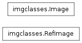

Previous topic
Imagefindpars: Source finding parameters
Next topic
Classes to manage Catalogs and WCS’s

Imagefindpars: Source finding parameters
Classes to manage Catalogs and WCS’s

Bases: object
Primary class to keep track of all WCS and catalog information for a single input image. This class also performs all matching and fitting.
| Parameters : | |
|---|---|
filename : str
input_catalogs : list of str or None
kwargs : dict
|
|
Generate a default reference WCS for this image.
Convert sky catalog for all chips into a single catalog for the entire field-of-view of this image.
Remove intermediate files created.
Close any open file handles and flush updates to disk
Return the information for a shiftfile for this image to provide compatability with the IRAF-based MultiDrizzle.
Helper method to return a list of all the input WCS objects associated with this image.
Return a string with the names of input_xy catalog names
Uses xyxymatch to cross-match sources between this catalog and a reference catalog (refCatalog).
Perform a fit between the matched sources.
| Parameters : | |
|---|---|
kwargs : dict
|
|
Notes
Sort and clip the source catalog based on the flux range specified by the user. It keeps a copy of the original full list in order to support iteration.
Transform sky coords from ALL chips into X,Y coords in reference WCS.
Update header of image with shifts computed by perform_fit().
Write and/or attach a headerlet based on update to PRIMARY WCS
Write out the catalog of all sources and resids used in the final fit.
Write out the output(transformed) XY catalog for this image to a file.
Write out the all_radec catalog for this image to a file.
Bases: object
This class provides all the information needed by to define a reference tangent plane and list of source positions on the sky.
Remove intermediate files created
Return the information for a shiftfile for this image to provide compatability with the IRAF-based MultiDrizzle.
Transform reference catalog sky positions (self.all_radec) to reference tangent plane (self.wcs) to create output X,Y positions.
Write out the all_radec catalog for this image to a file.